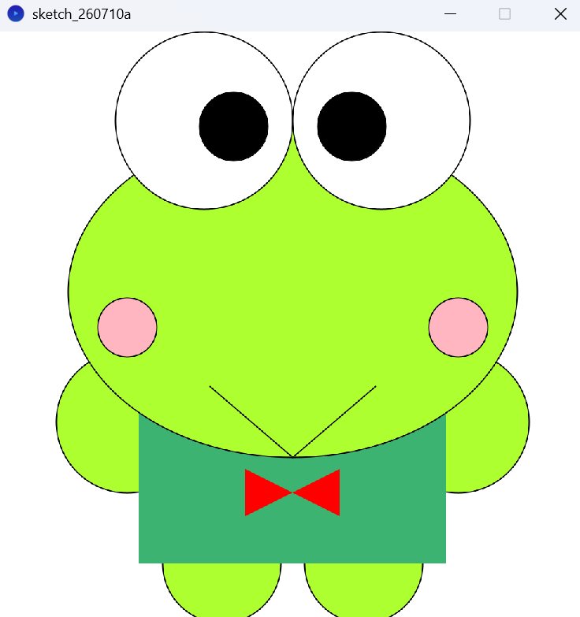
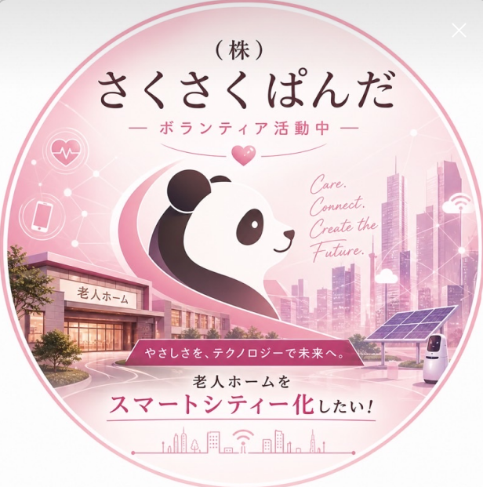

SMARTPHONE SALON / VOLUNTEER GUIDE
スマホをきっかけに、
人と、つながる。
地域の方と同じテーブルを囲んで、
お話ししたり、スマホを一緒に触ったり。
最初の一歩を、このガイドから。

START HERE
参加する前に、知っておきたいこと。
次の参加を考えよう
開催情報を確認したら、自分の予定にメモ。空きコマも整理できます。
一回ずつ、つながりを記録。
活動のスタンプを集めて、参加回数と活動時間を振り返ろう。
困ったときは
完璧に教えなくて大丈夫です。一緒に画面を見るだけでも、十分役に立っています。
うまく話せないとき
最初の一言に困ったら
- 「こんにちは、学生の○○です。今日はどんなことをしてみたいですか？」
- 名前と、学生であることを伝えるだけで安心してもらえます。
- 相手のスマホを見せてもらうところから始めましょう。
会話が止まってしまったら
- 沈黙は悪いことではありません。画面を見ながら、相手の操作を待ちましょう。
- 「ゆっくりで大丈夫ですよ」と声をかけます。
- 雑談を無理に作らなくて大丈夫です。
分かりやすく伝えるコツ
- 一度に伝えられるのは1つだけ。短く、ゆっくり話します。
- 横文字は言い換えます。「アプリ」は「スマホの中の道具」、「タップ」は「指で軽く押す」。
- 操作は本人にしてもらい、勝手に画面を触らないようにします。
- できたら「できましたね」と、その場で伝えます。
質問に答えられないとき
分からないことを聞かれたら
- 「分からないので、一緒に調べてみましょう」と言って大丈夫です。
- 自信がないまま操作するのはやめましょう。
- 近くの先輩や、サロンの担当の人に聞きます。
必ず相談してほしいこと
- お金の支払い、契約、課金、怪しいメッセージやリンク
- パスワードや暗証番号は、聞かない・見ないようにします。
- すぐに答えが出ないときは、持ち帰って次回に回答しても大丈夫です。
初めて来た先輩の体験談
高齢者にちゃんと教えられるのか心配でした
高齢者に間違ったことを教えちゃったり、その場で言葉につまらないか心配だったけど周りにはたくさんの人がいてみんなが助けてくれるからとても安心しました。今はAIも発展しているからAIに聞いてもいいと思います。AIの使い方を高齢者に教えるいい機会になると思いました。高齢者の方から「ありがとうね」といわれたときはとてもうれしかったです。教えてよかった！と感じました。（大学1年生）
高齢者と会話するのが不安でした
はじめは、なかなか高齢者と最近会話していないということもあり、高齢者と会話するのに対して不安がありました。しかし、実際に会話すると高齢者はとても優しく、教えることの内容がわからなくても優しく接してくれました。また、高齢者の方々から高齢者自身の大学生時代のお話であったり、若いうちにこれしておきなさいなどといった高齢者ならではのお話を聞く、知ることができるよい機会となりました。高齢者と会話する機会がなかなかない中、高齢者との交流ができるとても良い機会でした。（大学1年生）
初参加で迷ったら
まずは、隣で一緒に画面を見る。
「今日は何をしてみたいですか？」と聞くところから。答えが分からないときは、担当者や周りの学生に相談しましょう。
SCENES & FLOW
同じテーブルから、
会話がはじまる。
送っていただいた実際の活動写真で、スマホカフェの様子を紹介します。

スマホのことも、日々のことも。
スマホの操作を一緒に確かめながら、お茶やお菓子を囲んで会話する時間。写真からは、世代をこえて同じ場を楽しむ様子が伝わります。
学生の役割
相手の「やってみたい」を聞くこと。操作を代わりに済ませるより、本人が試せるように隣で支えます。
当日の流れ
初参加の方向けの流れの目安です。集合時間や担当は、当日の運営案内に従ってください。
集合・今日の確認
担当者に挨拶し、相談の進め方や困ったときの相談先を確認します。
会場準備・お迎え
机や椅子を整え、参加者を迎えます。名前を伝えて、まずは一言ご挨拶。
お話ししながらスマホ相談
知りたいことを聞き、一つずつ一緒に操作します。分からないことは周囲に相談します。
一緒におさらい
できた操作をもう一度試してもらい、必要なら手順をメモします。
片付け・振り返り
会場を整え、気づいたことを共有。スタンプと活動記録も残しましょう。
SCHEDULE
活動予定
授業と活動、無理のないペースで。
次回の開催日時・会場は未掲載です。参加前に運営からの案内を確認してください。
自分の参加メモ
ここでの追加は個人のメモです。参加申込みや予約にはなりません。
参加予定をメモする
空きコマを整理する
授業があるコマを押すと色が変わります。空いている時間を確認して、開催案内と照らし合わせましょう。
参加メモと時間割は、このブラウザに保存されます。
教え方マニュアル
画面の名前は、機種やバージョンで少し違います。
文字を大きくする
- 「設定」を開く
- 「画面表示と明るさ」→「文字サイズを変更」
- スライダーを右に動かす
Wi-Fiにつなぐ
- 「設定」→「Wi-Fi」
- ネットワーク名を選ぶ
- パスワードを入力して「接続」
写真を家族に送る
- 「写真」を開き、送る写真を選ぶ
- 左下の共有ボタン（四角から矢印が出たマーク）を押す
- 送り先のアプリや相手を選ぶ
音を大きくする
- 本体の横にある音量ボタン（上）を押す
- 着信音は「設定」→「サウンドと触覚」で調整
文字を大きくする
- 「設定」を開く
- 「ディスプレイ」→「フォントサイズ」（機種で名前が違います）
- スライダーで大きさを選ぶ
Wi-Fiにつなぐ
- 「設定」→「ネットワークとインターネット」→「Wi-Fi」
- ネットワーク名を選び、パスワードを入力する
写真を家族に送る
- 「フォト」（または「ギャラリー」）で写真を選ぶ
- 「共有」ボタンを押す
- 送り先のアプリや相手を選ぶ
音を大きくする
- 本体の側面の音量ボタン（上）を押す
- 着信音は「設定」→「音とバイブレーション」で調整
画面の文字を大きくする
- Windowsは「設定」→「アクセシビリティ」→「テキストのサイズ」
- ブラウザだけなら、Ctrlキーを押しながら＋を押す
音を大きくする
- 画面右下のスピーカーのマークを押す
- バーを右に動かす
Wi-Fiにつなぐ
- 画面右下のWi-Fiのマークを押す
- ネットワーク名を選び、パスワードを入力する
MY VOLUNTEER RECORD
つながりスタンプ
積み重ねた時間を、自分の記録に。
このカードはブラウザ内に保存する活動の自己記録です。運営による出席認証や正式な活動証明にはなりません。
ABOUT US
人と人を、
ゆるやかにつなぐ。
運営チーム「さくさくぱんだ」について。
私たちについて
私たちは、高齢者のスマホの困りごとや、世代をこえた交流に取り組む学生チーム「さくさくぱんだ」です。
スマホカフェや交流の場で聞いた声をもとに、スマホの「分からない」を一緒に考える活動を続けています。
OUR PROJECT
つながロープ
スマホの操作支援をきっかけに、高齢者と若者のつながりをつくるプロジェクト。このガイドは、活動に参加する学生の一歩を支えるためのページです。
大切にしたい、3つのこと。
まず、聞く。
何ができなくて困っているか、何をやってみたいか。相手の言葉から始めます。
一緒に、試す。
一度に一つずつ。本人が操作する時間とペースを大切にします。
次へ、つなぐ。
その日だけで終わらず、次の相談や新しい交流につなげていきます。
FOLLOW OUR DAYS
活動の写真やお知らせをまとめる場所。
公式アカウントのリンクは準備中です。